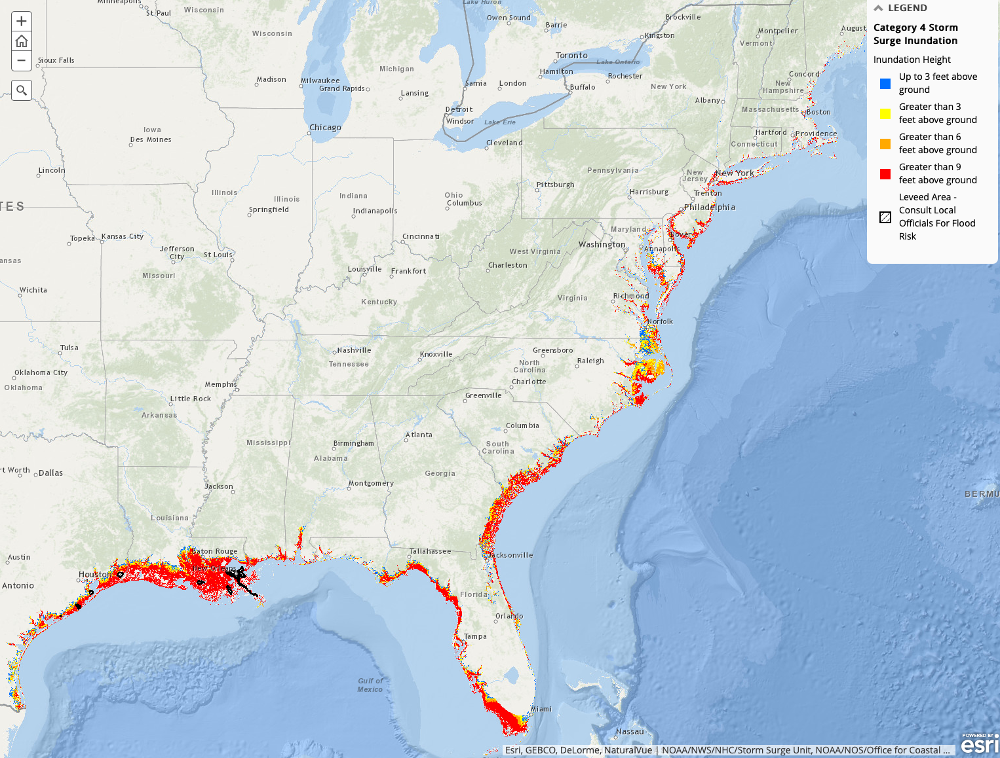

Storm surge events
Flooding from storm surge depends on several factors, including track, intensity, size, and forward speed of the hurricane and the characteristics of the coastline where it comes ashore or passes nearby. Fig. 3.2.2 is obtained from the map generated by the US Environmental Protection Agency (EPA). It shows the storm surge inundation map obtained from the SLOSH numerical model. It shows the vulnerable points on the Eastern US coast significantly vulnerable to inundation heights of up to 9 feet.
{kind=link}

Fig. 3.2.2 This map displays SLOSH (Sea, Lake, and Overland Surges from Hurricanes) model results. SLOSH is a numerical model used by NWS (National Weather Service) to compute storm surge. (Source: Storm surge inundation map by EPA.)
Below outlined are some major storm surges to hit the US east coast over the last century.
1900 Galveston hurricane
This was a category 4 storm that obliterated Galveston, TX, on Sep 8, 1900. A storm surge of 8 - 15 feet left almost 3600 homes destroyed, leaving 10000 people homeless. The estimated death toll was about 12000. It is believed that Galveston’s geography makes it a future hotspot for future storms. If nothing is done, it could be plagued by chronic flooding by the year 2030.
1926 Miami hurricane
A category 4 hurricane hit Miami on Sep 18, 1926, leading to a storm surge of 10 feet on the Miami beach. It breached the dike that protected the town of Moore Haven from the waters of Lake Okeechobee, leading to flooding damage. In today’s estimate, it caused damage of $100B, and such a hurricane today could potentially lead to $235B in damage.
1928 Okeechobee hurricane
A category 5 hurricane hit Puerto Rico on Sep 13, 1928, leaving more than 500000 people homeless. It reached the mainland US on Sep 17 at West Palm Beach in Florida. The storm again caused the water to pour out of Lake Okeechobee and leaving hundreds of square miles flooded to depths as much as 20 feet. The storm continued to cause damage up the Eastern seaboard.
1935 Labor day hurricane
A category 5 hurricane struck the Florida Keys on Sep 2, 1935. The hurricane Dorian reached winds of 185 miles per hour, and the storm surge reached almost 20 feet. It destroyed nearly all structures in the town of Islamorada, Tavernier to Marathon. It also extensively destroyed the Florida East Coast railway.
2005 Katrina hurricane
This was one of the costliest hurricanes in US history, causing damage of almost $160B. Katrina was a category 5 hurricane that hit Florida as a category 1 hurricane on Aug 25, 2005, later intensified before slamming into New Orleans and surrounding areas in Louisiana. The surge had a peak of almost 28 feet and left nearly 80% of New Orleans flooded. It also destroyed 30 oil platforms and closure of nine refineries. It was estimated that the disaster covered almost 90000 square miles.
2012 Sandy superstorm
Hurricane Sandy merged with a winter storm in late Oct 2012, affecting 24 states. The storm surge devastated New Jersey and New York, flooding tunnels, streets, subways, and coastal areas. More than 8.5M people lost power, 650000 houses were damaged, leading to an estimated loss of $70B.
2017 Harvey hurricane
A category 4 hurricane made landfall on San Jose Island, TX, on Aug 25, 2017. It inflicted estimated damage of $125B centered on the Houston metropolitan areas and southeast Texas.